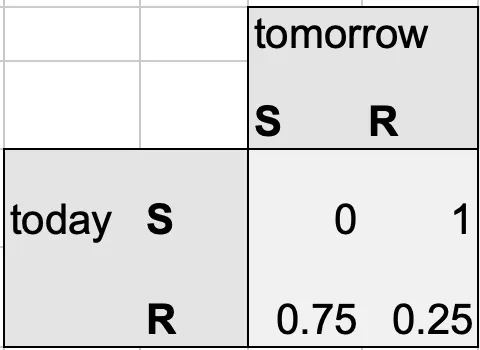
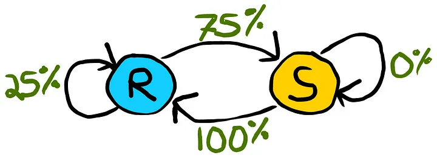
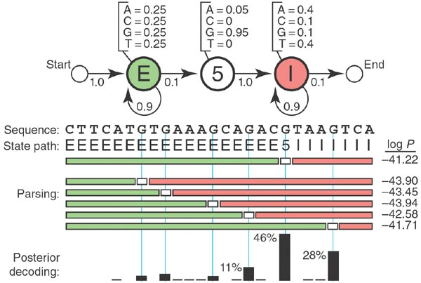

Hidden Markov Models#
Si bien los alineamientos son muy útiles para comparar diferentes secuencias, no son suficientes para el nivel de ruido que poseen los genomas. Para esto es útil tener niveles de confianza de los patrones que se observan. Los Modelos de Markov sirven para cuantificar estados siguientes apartir de la información que se tiene. Un ejemplo clásico de un modelo de Markov es una predicción climática (ejemplo tomado de https://towardsdatascience.com/predicting-the-weather-with-markov-chains-a34735f0c4df)
Predicción climática usando Markov Chain#
Datos Observados: Supongamos que hemos generado 7 días de datos históricos de clima para entrenar nuestro Markov Chain. La secuencia de eventos son: [rain, sun, rain, sun, rain, rain, sun]
Inferencia del patrón (Hidden path): Ahora calculamos los porcentajes de a) días soleados después de días lluviosos: 3/4=75%
b) días lluviosos después de días soleados: 2/2 = 100%
Construimos una matriz de transición con las probabilidades basadas en observaciones de los estados ocultos (rain-after-rain = 25% and sun-after-sun = 0%).

Markov Chain

HMM para Anotaciones de Genoma#
Hidden Markov Models (HMMs) son una forma de realizar modelos probabilísticos para marcar (anotar) fragmentos de secuencias. Estos modelos permiten tener en cuenta la heterogeneidad de diferentes fuentes y así nos evitan tener que imponer parámetros y patrones ad hoc.

Por ejemplo, cómo reconocer sitios de splicing? De acuerdo a un modelo de probabilidades podemos inferir donde es el cambio de exón a intrón. https://www.nature.com/articles/nbt1004-1315
El diagrama muestra el modelo oculto de Markov (HMM) usado para representar una secuencia de ADN compuesta por exones (partes codificantes) e intrones (partes no codificantes).
Cada círculo es un estado oculto (por ejemplo: “estás en un exón” o “estás en un intrón”), y las flechas indican las probabilidades de pasar de un estado a otro.
La transición de exón a intrón no se basa directamente en la letra observada (p.ej G), sino en las probabilidades internas del modelo, aprendidas a partir de muchos genes reales. En el ejemplo, la transición ocurre justo después de la quinta G, pero esto no implica que la letra G cause el cambio; simplemente, el modelo considera que en ese punto es más probable estar comenzando un intrón. Las probabilidades de transición (como exón → intrón) y de emisión (por ejemplo, emitir una G desde el estado exón) se derivan de conteos estadísticos durante el entrenamiento del modelo.
Herramientas HMM para secuencias#
Pfam-Interpro#
Largas bases de datos de alineamientos múltiples se han utilizado para generar hidden Markov models. Estos agrupan los patrones y dan información funcional, clasificando las proteínas en familias así como haciendo predicciones de dominios. Esta conjunto de bases de datos está alojado en InterPro: https://www.ebi.ac.uk/interpro/ (Para un tutorial más completo visite: https://www.ebi.ac.uk/training/online/courses/interpro-quick-tour/#vf-tabs__section–contents)
Genes Receptores Olfativos#
Los genes de receptores olfativos (ORs) constituyen una de las familias génicas más extensas en los genomas de mamíferos, con cientos de copias distribuidas a lo largo de diferentes cromosomas. Estas familias evolucionan con gran rapidez debido a procesos de duplicación génica, pseudogenización y diversificación funcional, lo que genera un repertorio dinámico que se ajusta a las presiones ecológicas y conductuales de cada especie. El estudio de sus dominios proteicos conservados, en particular el motivo de siete hélices transmembrana (7TM) característico de los receptores acoplados a proteína G, es fundamental para distinguir genes funcionales de pseudogenes, ya que la pérdida de residuos críticos o de segmentos estructurales completos puede abolir la capacidad de unir ligandos y transmitir señales. Comprender estas variaciones no solo permite trazar la historia evolutiva de la familia, sino también vincular diferencias genómicas con perfiles olfativos específicos y, en última instancia, con la ecología y el comportamiento de cada organismo.
Recursos para profundizar#
Smithsonian (divulgación): Sniffing Out the Science of Smelling https://www.smithsonianmag.com/science-nature/scientific-mysteries-smelling-180980756/
A probabilistic classifier for olfactory receptor pseudogenes https://pmc.ncbi.nlm.nih.gov/articles/PMC1599758/#sec5
Ejercicio: Análisis comparativo de dominios en receptores olfatorios funcionales y no funcionales#
Objetivo#
Comparar la arquitectura de dominios proteicos entre un receptor olfatorio funcional y un pseudogén (gen no funcional) utilizando la base de datos InterPro.
Parte 1: Análisis del pseudogén OR11H7#
Busque en NCBI la secuencia proteica del receptor olfatorio 11H7 humano con el identificador NP_001335202.1
Copie la secuencia de aminoácidos (formato FASTA)
Pegue la secuencia en la casilla de búsqueda
Haga clic en “Search” y espere los resultados
Cómo interpretar los resultados de InterPro:#
InterPro mostrará una representación gráfica de su secuencia con barras de colores que indican los dominios identificados. Observe:
Barras de colores: Cada color representa un dominio o familia diferente
Extensión de las barras: Indica qué porción de su proteína cubre cada dominio
Coordenadas: Los números muestran las posiciones de inicio y fin de cada dominio (ej. 45-280)
Nombres y códigos: Cada dominio tiene un código InterPro (ej. IPR000276) y un nombre descriptivo
Preguntas para análisis:#
¿Qué dominios y familias de proteínas identifica InterPro? (anote los códigos IPR)
¿Qué tipo de receptor es según la clasificación de InterPro?
Observe la representación gráfica: ¿Las barras de dominios cubren la mayor parte de la secuencia o hay grandes regiones sin cobertura?
¿Cuál es la longitud total de la proteína? ¿Qué porcentaje está cubierto por dominios?
Anote las coordenadas (inicio-fin) de los dominios principales
Parte 2: Análisis de un receptor olfatorio funcional (control positivo)#
Busque en NCBI la secuencia proteica del receptor olfatorio 1A1 humano (NP_055380.2), que es un receptor funcional
Repita el proceso de búsqueda en InterPro con esta secuencia
Preguntas para análisis:#
¿Qué dominios y familias identifica InterPro en este caso?
En la representación gráfica, ¿observa una cobertura más completa de la secuencia comparada con OR11H7?
¿Identifica el dominio de 7 dominios transmembrana (7TM) característico de los receptores acoplados a proteína G (GPCRs)?
Compare las coordenadas de los dominios con las de OR11H7. ¿Son similares en extensión?
¿Qué porcentaje de la secuencia está cubierto por dominios funcionales?
Parte 3: Comparación#
Complete la siguiente tabla comparativa (los resultados también se pueden visualizar en forma tabular en la pestaña “Entries”):
Característica |
OR11H7 (Pseudogén) |
OR1A1 (Funcional) |
|---|---|---|
Longitud de la proteína (aa) |
||
Dominios InterPro identificados (códigos IPR) |
||
Familia de proteínas |
||
Coordenadas del dominio principal |
||
Porcentaje de cobertura de dominios |
||
Presencia de dominio 7TM completo |
||
Estado funcional predicho |
Preguntas de reflexión:#
¿Cuáles son las principales diferencias en la arquitectura de dominios entre ambas proteínas?
Basándose en la cobertura de dominios y las coordenadas, ¿por qué OR11H7 se clasifica como pseudogén?
¿Qué implicaciones funcionales tienen las diferencias observadas en la representación gráfica de InterPro?
¿Qué nos dice esto sobre la evolución de los receptores olfatorios en humanos?
Criterios para evaluar si un dominio está completo en InterPro:#
Cobertura visual: Las barras de dominios deben extenderse a lo largo de las regiones esperadas sin grandes interrupciones
Coordenadas completas: Compare las coordenadas inicio-fin entre ambas proteínas
Continuidad: Los dominios no deben estar fragmentados o interrumpidos
Comparación con control: Use OR1A1 (funcional) como referencia de cómo debe verse un dominio completo